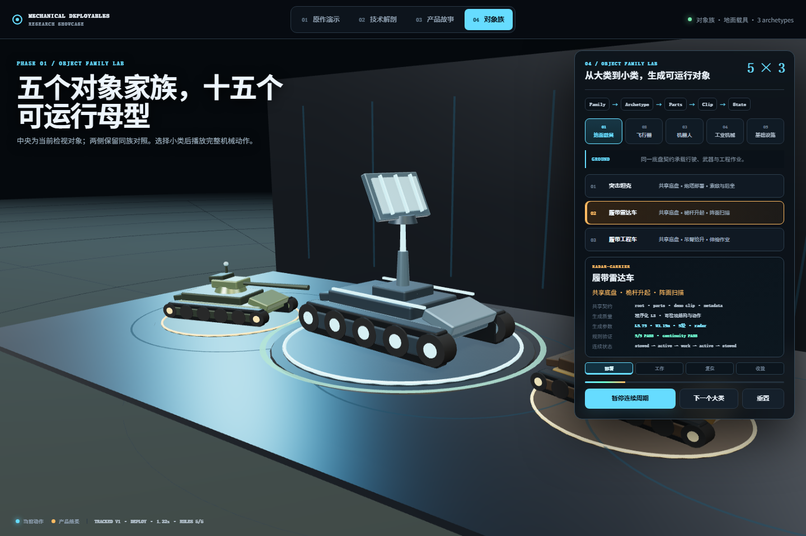
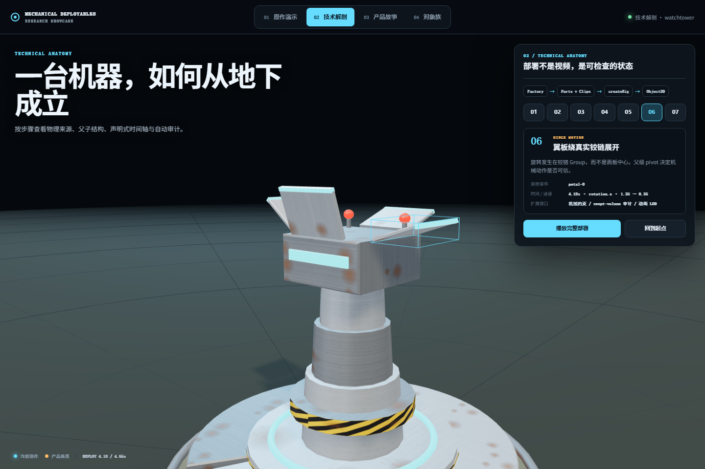
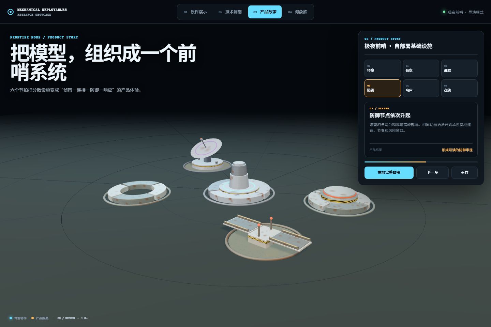

研究已停止并归档。公开展厅不复制无许可证的上游源码；保留分析、截图、独立实验和固定提交引用。
FINAL RESEARCH DECISION / 07
外观会被生成，
规则仍需运行。
手写基础几何不值得继续扩张。3D模型会替代大量外观生产，但部件语义、插槽、关节、状态、约束、物理、LOD和网络运行时不会随网格一起自动成立。
01 / VERIFIED EVIDENCE
我们真正验证了什么



可审计动画协议
root + parts + clips + metadata 足以描述低模机械部署、声音、FX与几何审计。
多实例只解决了一半
活动调度能减少CPU更新；25个实例约702 draw calls，资源共享和批处理仍是主要瓶颈。
代码能生成受约束母型
共享底盘、差异载荷和连续状态成立，但视觉质量与适用范围受母型规则限制。
02 / REPLACE OR RETAIN
哪些会被替代，哪些会留下
交给生成模型
- 普通资产外观与风格变体
- 基础曲面、细节和材质候选
- 概念草模与场景填充物
- 部分分件、骨骼和蒙皮工作
保留为运行底座
- 部件语义、插槽与装配规则
- 关节范围、状态机与行为协议
- 碰撞、物理、LOD和性能预算
- 网络同步、存档与确定性验证
文本 / 图片→生成3D候选→分件与语义→规则验证→游戏运行时
03 / OPEN ECOSYSTEM
相关开源项目地图
Three.js · Rapier · three-mesh-bvh
负责场景、动画、碰撞和空间查询；不会自动赋予网格机械语义。
Three.js ↗JSCAD · CadQuery · build123d
适合参数化实体和可验证零件；需要额外游戏格式与运行时接入。
JSCAD ↗TripoSR · Hunyuan3D · TRELLIS
快速提供外观、网格和PBR候选；部件、关节和许可必须单独检查。
TripoSR ↗CAD-Coder · Chat3D · Text2CAD
把自然语言或图片转为可执行CAD代码，当前更适合单体零件和研究验证。
CAD-Coder ↗PartGen · UniRig · PAct
生成研究正在吸收分件、骨骼、蒙皮和关节估计，这也是停止手写外观扩张的主要依据。
UniRig ↗Infinigen
证明程序化规则可生成大规模自然与室内世界，但它不是机械游戏运行时。
Infinigen ↗04 / RESTART CONDITIONS
未来何时值得重启
- 01
出现明确产品需求
先确定是RTS、配置器、机器人仿真还是数字孪生，不能再以“模拟整个世界”作为模糊目标。
- 02
几何来源可替换
允许AI网格、CAD、GLB和程序化母型进入同一适配层，而不是绑定某一种建模方式。
- 03
建立Mechanical DSL
语言模型只生成受Schema约束的母型、插槽、关节、状态和约束；确定性工具负责执行与裁决。
- 04
验证真实运行预算
必须补齐LOD、instancing、物理、寻路、网络、存档和目标设备性能测试。
明确不继续的方向
不继续扩大手写基础几何对象数量；不把当前演示包装成世界模拟器；不在缺少真实工程数据时宣称适用于工业或军工仿真；不公开部署无许可证的上游源码。